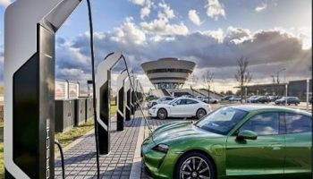

برای خودروهای برقی، ظرفیت پیمایش مهمتر است یا سرعت شارژ؟
«ظرفیت پیمایش» و «سرعت شارژ باتری» خودرو الکتریکی دو عامل مهم در خرید وسایل نقلیهی برقی هستند که باید بهخوبی مدنظر قرار گیرند. در این مقاله، تأثیرگذاری این دو عامل بر خرید خودرو برقی را بررسی میکنیم.
بدیهی است که خودروهای الکتریکی موضوع جدیدی نیستند و بیش از یک دهه از زمان دردسترس قرارگرفتن عمومی اولین وسایل نقلیهی الکتریکی میگذرد. بااینحال، هماکنون خودروهای برقی به اندازهای در جامعه جا افتادهاند که تغییراتی در زیرساختها و مقررات دولتها باید رخ دهد. این تغییرات نه در دو سال آینده، بلکه همین امروز باید اعمال شود. دلیل نیاز به تغییر فوری، بهویژه در زیرساختها این است که خودروهای الکتریکی از وسایل نقلیهی مجهز به پیشرانهی احتراق داخلی بسیار متفاوت تغذیه میشوند و سوخت خود را دریافت میکنند و خود را با نیازهای آنها باید سازگار کنیم.
بهگزارش BMWBLOG، مهمترین نگرانی در بین خریداران جدید و قدیمی خودرو الکتریکی، اضطراب ناشی از میزان ظرفیت پیمایش (شعاع حرکتی) خودرو است. انجام مداوم اعمال ریاضی در ذهن دربارهی اینکه چقدر از مسیر برای رسیدن به مقصد یا چقدر از ظرفیت باتری خودرو باقی مانده است و تا نزدیکترین ایستگاه شارژ فاصله چقدر داریم و مدت زمان شارژ خودرو، خستهکننده و گاهی ترسناک بهنظر میرسد. بنابراین، نهتنها باید زیرساختهای خود را برای حمایت بهتر از خودروهای الکتریکی متناسب کنیم؛ بلکه خودمان را نیز با شرایط جدید وفق دهیم و یاد بگیریم چگونه با خودرو الکتریکی رانندگی کنیم و چه نکاتی را هنگام خرید در اولویت قرار دهیم. وقتی نوبت به خرید خودروهای الکتریکی میرسد، دو متغیر وجود دارد که باید مدنظر قرار گیرند: ۱. ظرفیت پیمایش؛ ۲. سرعت شارژ باتری.
۱.ظرفیت پیمایش
شعاع حرکتی یا ظرفیت پیمایش تعریف سادهای دارد و بهطورخلاصه، یعنی چقدر میتوان با هر بار شارژ کامل باتری با خودرو رانندگی کرد. به نظر میرسد هماکنون عدد طلایی میزان ظرفیت پیمایش خودروهای الکتریکی ۴۸۰ کیلومتر (۳۰۰ مایل) باشد. اگرچه خودروهایی وجود دارند که میتوانند مسیر بیشتری طی کنند (خودروهای تسلا و لوسید دارای ظرفیت پیمایش ۴۰۰ مایل هستند) و خودروهایی هم هستند که ظرفیت پیمایش بسیار کمتری دارند (مانند آئودی e-tron و بیامو i3)، بهنظر میرسد عدد ۴۸۰ کیلومتر عددی باشد که مشتریان با آن از اضطراب مربوط به ظرفیت پیمایش خودرو برقی رهایی مییابند. حتی در خودروهایی با ظرفیت پیمایش ۳۲۰ کیلومتر (۲۰۰ مایل)، مشتریان هنگام رانندگی هنوزهم این محاسبات ریاضی را در ذهنشان انجام میدهند و این نوع رانندگی تجربهی لذتبخشی نیست.
۲. سرعت شارژ باتری
سرعت شارژ تعریف متفاوتی دارد؛ اما به همان اندازهی ظرفیت پیمایش واضح است. بهطورخلاصه، سرعت شارژ یعنی شارژر چقدر سریع میتواند باتری خودرو را شارژ کند. بااینحال، دربارهی درجهبندی سرعت شارژ باتری خودرو متغیرهای مختلفی وجود دارد.
اولین متغیر حداکثر سرعت شارژ آن است که شرکت سازنده رتبهبندی میکند. سرعت شارژ معمولا برحسب کیلووات است و بیشتر خودروهای الکتریکی موجود در بازار میتوانند با سرعت ۱۵۰ کیلووات باتری را شارژ کنند که بسیار مناسب بهنظر میرسد. درحالحاضر، هر شارژر کمتر از ۱۰۰ کیلووات کُند و هر شارژر بیش از ۱۵۰ کیلووات بسیار سریع تلقی میشود. بااینحال، وقتی از شارژر دارای سرعت بیش از ۱۵۰ کیلووات سخن بهمیان میآید، دسترسی به ایستگاههای ارائهدهندهی چنین سرعت شارژی سازگار با خودروهای الکتریکی کاهش مییابد. بنابراین هرچه سرعت شارژ بیشتر باشد، بهتر است؛ اما انتظار نداشته باشید همیشه بتوانید با چنین سرعتی خودرو خود را شارژ کنید.
دومین متغیر نوع شارژری است که میتوانید استفاده کنید. بعضی اوقات میتوانید شارژرهای سریع ۱۵۰ کیلووات را در شرایط واقعی پیدا کنید (اکثر ایستگاههای سوپرشارژر تسلا از شارژرهایی با سرعت خیرهکننده بهره میبرند) و برخی از ایستگاههای شارژ خانگی نیز با این سرعت درجهبندی میشوند. اگر به چنین شارژرهایی دسترسی دارید، عالی است؛ اما همه شارژرهای موجود ۱۵۰ کیلووات نیستند؛ بنابراین حتی اگر خودرو الکتریکی فردی قابلیت شارژ با چنین سرعتی را داشته باشد، شارژر استفادهشده ممکن است چنین سرعتی نداشته نباشد. بهعبارتدیگر، نوع شارژر موجود در ایستگاه فرد را ملزم میکند خودرو را با سرعت کمتری از تواناییاش شارژ کند و البته مدت زمان بیشتری نیز طول خواهد کشید.
سومین و مهمترین متغیر دربارهی سرعت شارژ، مدت زمان یا دورهی حداکثر سرعت شارژ است. بسیاری از خودروهای جدید شارژر ۱۵۰ کیلووات دارند؛ اما بسیاری از آنها نمیتوانند با این سرعت برای مدت زمان طولانی شارژ شوند. بهعنوان مثال، برخی از مدلهای تسلا از شارژر ۲۵۰ کیلووات بهره میبرند که هماکنون سریعترین شارژر در بین خودروهای تولیدی بهشمار میروند. بااینحال، باتری خودرو برقی فقط برای مدت زمان بسیار کمی میتواند با ۲۵۰ کیلووات شارژ شود؛ بنابراین شارژکردن با این سرعت، درواقع نمیتواند بیش از یک شارژر ۱۵۰ کیلوواتی مدت زمان شارژ را بهبود بخشد. مقالهای در وبسایت Car and Driver در این زمینه منتشر شده که مثال خوبی برای آزمایش مدت زمان شارژ سریع سوپرشارژر تسلا است.
چگونه خودرو الکتریکی خود را انتخاب کنیم؟
هنگام انتخاب خودرو الکتریکی، باید بدانید بیشتر چه چیزی برایتان در اولویت قرار دارد، ظرفیت پیمایش یا سرعت شارژ. بهعنوان مثال، فرض کنید برای رفتن به محل کار، مسیر نسبتا طولانی را طی میکنید؛ اما در محل شرکت ایستگاه شارژ وجود دارد که میتوانید از آن هنگام ساعات کار استفاده کنید. در این وضعیت، زیادبودن ظرفیت پیمایش احتمالا مهمتر است؛ زیرا مجبورید مسیر طولانی را رانندگی کنید؛ اما تمام روز را هم برای شارژ باتری باید اختصاص دهید. شاید هم رفتوآمد زیادی نداشته باشید؛ اما در طول روز اغلب در داخل خودرو خود هستید. توانایی شارژ سریع در هر مکان و هنگام هر توقفی، ممکن است مهمتر از مسافت واقعی باشد که میتوانید با هر بار شارژ رانندگی کنید.
آئودی e-tron نمونهی مناسبی از مثال اخیر است. این خودرو ظرفیت پیمایش خیلی زیادی ندارد و در موقعیت واقعی با هر بار شارژ فقط میتوان مسافت ۳۲۰ کیلومتر را با آن طی کرد. بااینحال، e-tron میتواند در مدت زمان کمی با سرعت ۱۵۰ کیلووات از حدود ۱۰ درصد SOC (حالت شارژ) تا حدود ۷۰ درصد شارژ شود. این پهنای باند بزرگ با شارژ ۱۵۰ کیلووات است؛ بنابراین مدت زمان واقعی شارژ خودرو کاهش مییابد.
خودرو برقی هیوندای کنا نمونهی مناسبی از مثال اول است. ظرفیت پیمایش این خودرو با حدود ۴۱۵ کیلومتر (۲۵۸ مایل) درمقایسهبا e-tron بیشتر است؛ اما فقط با شارژر ۷۵ کیلووات شارژ میشود. بنابراین، در موقعیت واقعی میتواند حدود ۸۰ کیلومتر (۵۰ مایل) مسافت بیشتری طی کند؛ اما سرعت شارژش کمتر است.
بدیهی است میزان اقبال مشتریان به خرید این دو خودرو، چندان بههم ربطی نخواهد داشت؛ زیرا قیمت آنها در دو دسته کاملا متفاوت است. بااینحال، اطلاعات مربوط به نحوهی عملکرد آنها در موقعیت واقعی ثابت میکند ظرفیت پیمایش کلی، سرعت شارژ، مدت زمان سرعت شارژ، دردسترسبودن شارژرها در منطقهی محل زندگی و نوع شارژر آنها، برای تصمیمگیری دربارهی خرید مهم است.
درپایان، بهطورخلاصه باید بگوییم اگر بهدنبال خرید خودرو الکتریکی هستید، فقط به ظرفیت پیمایش کلی آن بهعنوان شاخصی برای مناسببودن خودرو یا چگونگی تجربهی رانندگی با آن نگاه نکنید؛ زیرا عوامل دیگری نیز در این امر دخیل هستند که ممکن است مهمتر باشند. ناگفته نماند تشخیص اولویت اصلی برای خرید واقعا به وضعیت خاص شما برمیگردد و همهی آنها باید قبل از خرید مدنظر قرار گیرند.